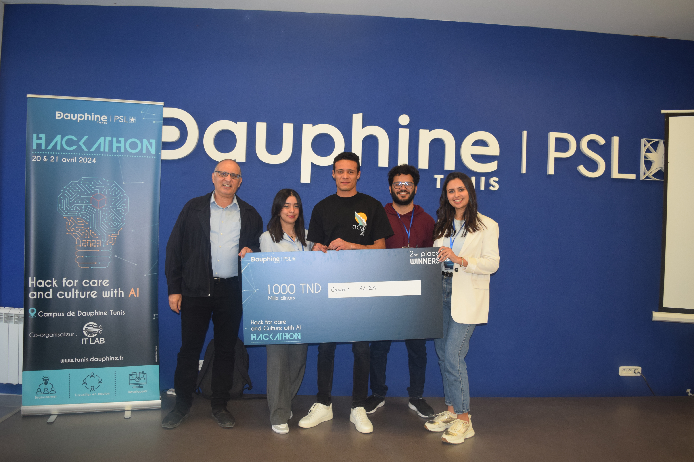
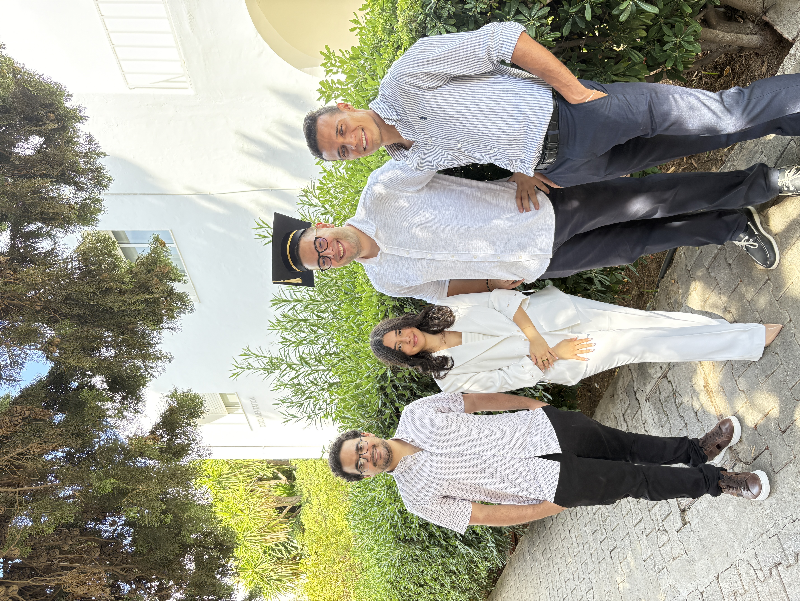

BNP Paribas IMEX · 2025
Regulatory document analysis with RAG
A GPT-4 pipeline that flags anomalies, enriches data and produces a structured Excel deliverable, with a Streamlit interface.
I'm Nadia, a Data & AI professional with an M.Sc. in Data Science and AI from Paris Dauphine – PSL. I like understanding complex problems, finding the right approach and turning ideas into practical solutions — combining technology, data and business thinking along the way.
My work sits between technical depth and business needs. I've built RAG pipelines that read regulatory documents, dashboards that track financial performance, and machine learning models compared on clear metrics.
I trained in business intelligence first, then specialised in machine learning, deep learning, NLP and generative AI at Paris Dauphine – PSL. That mix lets me talk to both the people who own the question and the people who own the data.
Outside of work, I've been active in student life: communication lead and deputy secretary at Club Tunis Méditerranée, and member of the Dauphine student office.
Projects from internships, a consulting role and my master's. Filter by the profile you're hiring for.
A GPT-4 pipeline that flags anomalies, enriches data and produces a structured Excel deliverable, with a Streamlit interface.
Dashboards to monitor financial performance, plus an intelligent tool that extracts data from financial documents automatically.
An assistant that answers medical questions from documents, built on a RAG architecture with a Streamlit front end.
View projectScraping, annotation and model training on medical articles from PubMed.
View projectSeveral machine learning algorithms compared on the Coimbra dataset to find the most reliable approach.
K-Means and hierarchical clustering on socio-economic indicators, plus a churn use case with model comparison.
A complete business intelligence solution built with SSIS, SSMS and Power BI.
The same foundations, applied to the role you need.
Clean data, build dashboards and make performance easy to read, with Power BI, Tableau, SQL and Python.
Build and compare models for prediction, clustering and language tasks, then ship them as usable apps.
Turn business needs into clear indicators and decision-support tools that teams can rely on.
A few highlights from my academic journey and projects.


I'm looking for my next role in data science, data analysis or business analysis. Send me a message, I reply quickly.